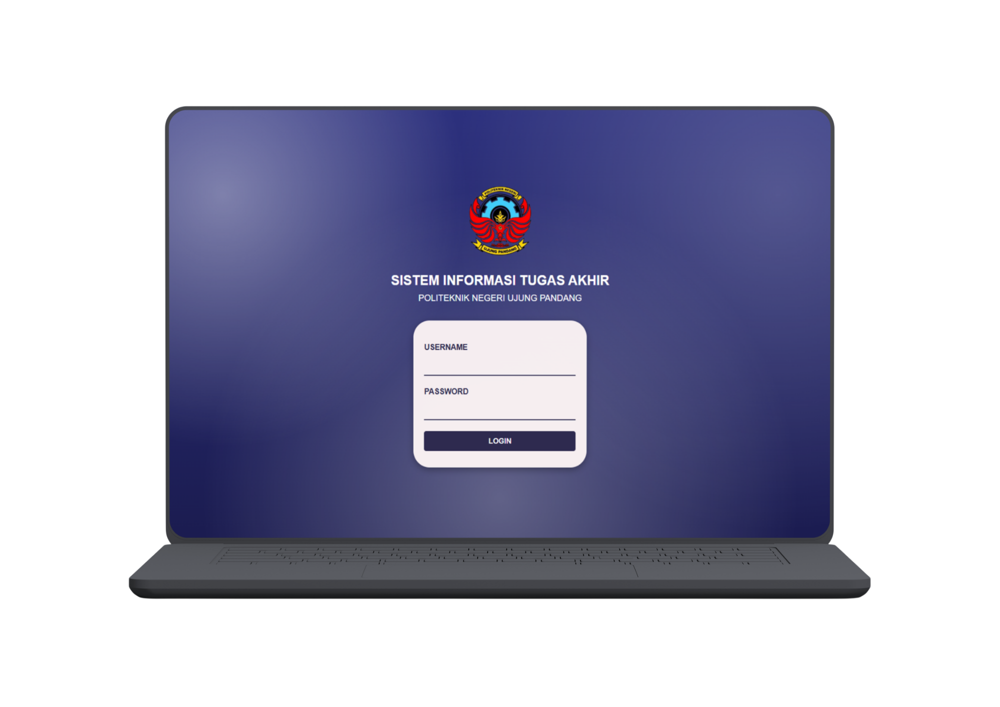

FRONT END WEBSITE



Sistem Informasi Tugas Akhir
Sistem Operasi Tugas Akhir merupakan website yang mempermudah mahasiswa dan dosen dalam mengelola proses pengajuan tugas akhir, mulai dari pengajuan judul hingga tahapan persetujuan.